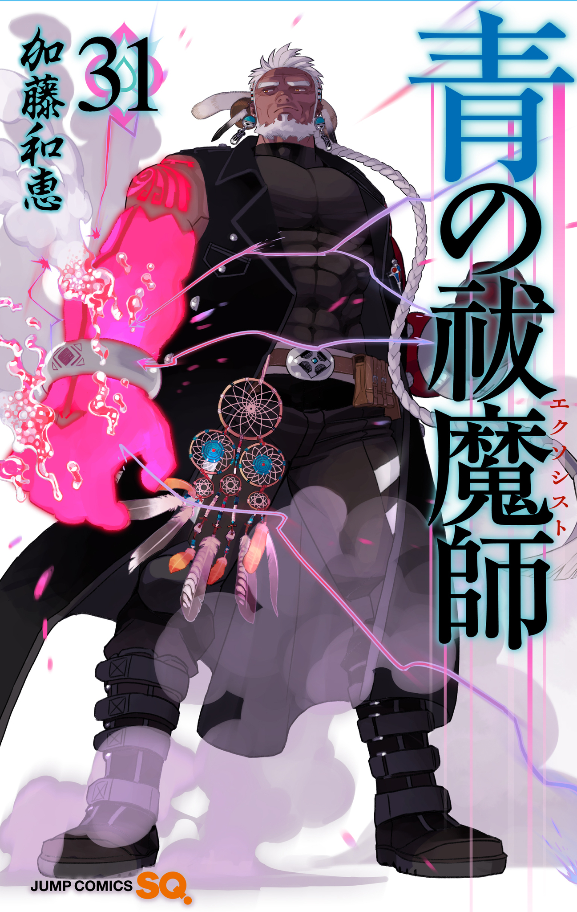

Ao No Exorcist
Auteur : Katou Kazue
Artiste : Katou Kazue
Année de publication : 2009
Genres : Action, Aventure, Fantaisie
Status : En cours
Synopsis
Ce monde se compose de deux dimensions jointes en une seule, comme un miroir. Le premier est le monde dans lequel vivent les humains, Assiah. L’autre est le monde des démons, la géhenne. Habituellement, voyager entre les deux, et même tout type de contact entre les deux, est impossible. Cependant, les démons peuvent passer dans ce monde en possédant tout ce qui existe en son sein. Satan est peut-être le roi des démons, mais il y a une chose qu’il n’a pas, et c’est une substance dans le monde humain qui est assez puissante pour le contenir ! Dans ce but, il a créé Rin, son fils avec une femme humaine, mais le fils acceptera-t-il ses plans? Ou va-t-il devenir autre chose...? Un exorciste ?